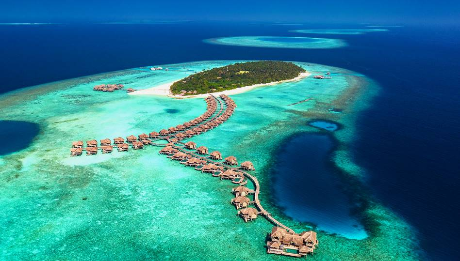

Brasil
Brasil ofrece varias opciones de turismo entre ellas: actividades de aventura, ecoturismo, turismo de negocios y eventos, fiestas populares, de sol y playa, deportes, buceo, pesca y diversos patrimonios de la humanidad

Brasil ofrece varias opciones de turismo entre ellas: actividades de aventura, ecoturismo, turismo de negocios y eventos, fiestas populares, de sol y playa, deportes, buceo, pesca y diversos patrimonios de la humanidad
El turismo en Maldivas es de relax en resort u hotel de playa, con las experiencias de turismo activo propias de este tipo de destinos de viaje: buceo, esnórquel, surf, wind surf, kitesurf y otras actividades acuáticas, como la pesca. También son muy habituales las navegaciones de día completo a islas próximas conocidas como “Island Hopping” y los sobrevuelos escénicos para admirar desde el aire la peculiar geografía de Maldivas.
Todo el país está dotado de una naturaleza maravillosa, desde las auroras boreales hasta las impresionantes vistas del mar Báltico.

Tailandia posee una belleza natural de norte a sur. Chiang Mai, en el norte, es una visita obligatoria. Disfruta de sus montañas, teñidas de ese verde tan especial, sus ríos, sus cataratas, y visita sus templos donde encontrarás esa paz espiritual tan escasa en occidente.